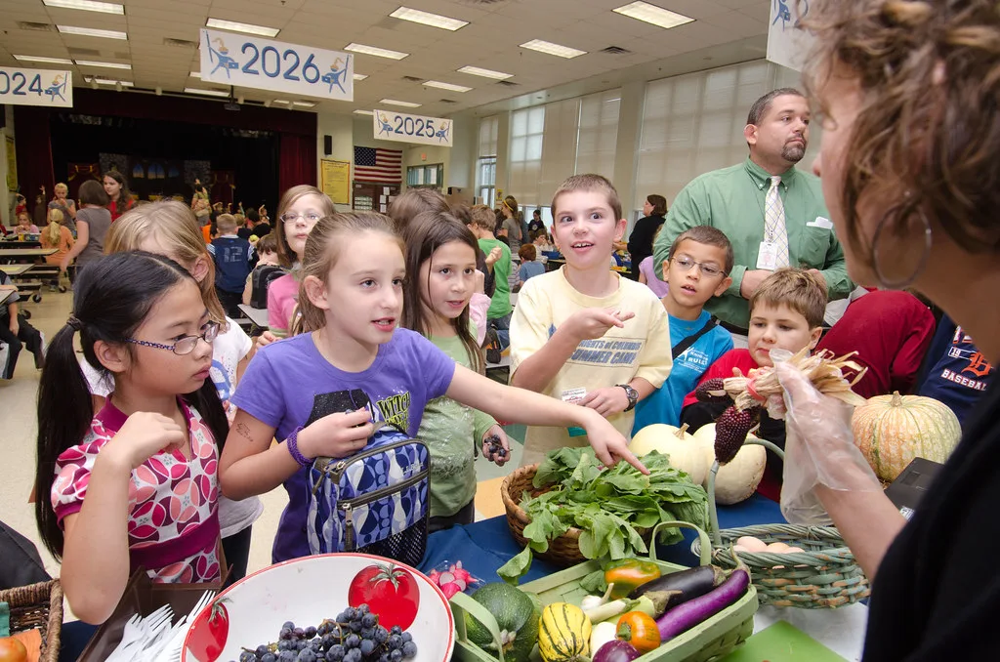
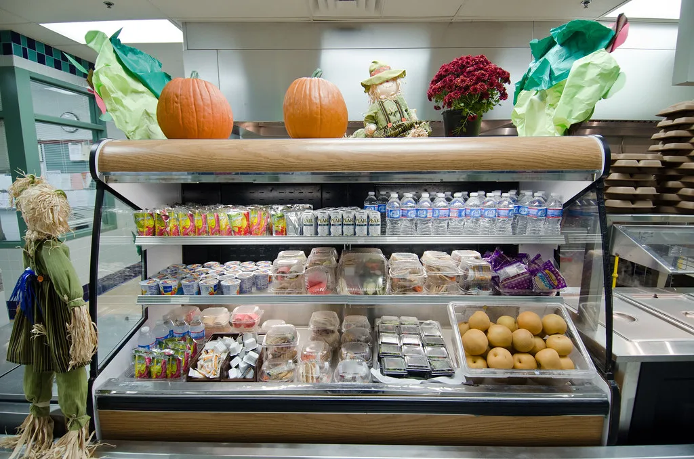

급식 조리사와 돌봄전담사 등 학교에서 일하는 비정규직 노동자들이 27일 하루 총파업에 나서면서 전국 곳곳의 학교 급식과 돌봄 운영에 차질이 빚어졌다. 이번 파업은 학교비정규직노동조합연대회의가 교육당국과의 임금교섭이 결렬된 데 따라 벌인 것으로, 급식과 돌봄을 포함한 전 직종이 대상이었다. 상당수 학교에서는 점심 급식이 빵과 우유 같은 대체식으로 바뀌었다.
교육부 집계에 따르면 이날 오전 11시 기준 전국 16개 시도교육청과 국립학교 소속 교육공무직원 18만722명 가운데 2만3562명이 파업에 참여해 참여율은 13.0%를 기록했다. 지역별로는 경기도에서 5582명이 참여해 가장 많았다. 파업 참여율 자체는 높지 않았지만 급식과 돌봄처럼 특정 직종에 인력이 몰려 있는 분야에서는 영향이 크게 나타났다. 조리 인력 몇 명만 빠져도 한 학교의 급식 전체가 멈출 수 있는 구조이기 때문이다.

급식 차질 규모는 전체 학교의 3분의 1에 가까웠다. 급식을 실시하는 1만2597개교 가운데 4014개교(31.9%)가 정상 급식을 하지 못했다. 이 수치에는 정기고사로 원래 급식이 없던 11곳과 학사일정을 조정한 152곳이 포함됐다. 나머지 학교 가운데 3698곳은 빵과 우유 등 대체식을 제공했고, 30곳은 학생들에게 도시락을 싸 오도록 안내했으며, 123곳은 도시락을 따로 구매해 나눠줬다. 일부 고등학교에서는 저녁 급식이 어려워지면서 야간 자율학습을 운영하지 않은 곳도 있었다.
지역별 편차도 컸다. 강원과 세종은 대체식을 제공한 학교 비율이 각각 63.3%, 63.8%로 전국에서 가장 높았다. 세종은 전체 152개 학교 가운데 97곳이 대체식으로 점심을 해결했다. 반면 서울은 대체식이나 도시락으로 급식을 바꾼 학교 비율이 11.0%에 그쳐 전국 평균보다 크게 낮았다. 돌봄교실은 전체 1만3101실 가운데 753실(5.7%)이 운영되지 않았다.
노조 측은 지난 9월부터 교육부, 16개 시도교육청과 집단임금교섭을 벌여 왔지만 합의에 이르지 못했다고 밝혔다. 주요 요구 사항으로는 지방교육재정교부금 개편 중단, 정규직과의 차별 철폐와 임금체계 마련, 학교급식법 개정에 따른 인력 충원 예산 확보 등이 꼽힌다. 연대회의는 이달 11일 환경미화 직종의 선제 파업을 시작으로 국회 앞 농성 등을 이어가며 이날 총파업을 예고해 왔다.

교육당국은 파업에 대비해 학교별로 식단을 조정하고 대체식을 제공하는 한편, 돌봄은 통합 운영 등 대체 프로그램으로 공백을 줄이는 데 주력했다. 각 학교는 가정통신문 등으로 파업 당일 급식 변경 사항을 미리 안내했다. 그럼에도 학부모들 사이에서는 해마다 비슷한 시기에 급식 파행이 되풀이된다는 불만과, 열악한 처우 개선 없이는 문제가 반복될 수밖에 없다는 목소리가 함께 나온다.
학교 비정규직 노동자의 처우 문제는 매년 교섭 때마다 갈등의 불씨가 돼 왔다. 이번 파업은 하루로 끝났지만 교섭이 타결되지 않으면 추가 쟁의 가능성도 배제하기 어렵다. 교육당국과 노조가 예산 여건 속에서 접점을 찾을 수 있을지가 학교 현장의 안정을 좌우할 전망이다. 학생과 학부모가 겪는 불편을 줄이기 위한 실질적인 대화가 필요하다는 지적이 나온다.